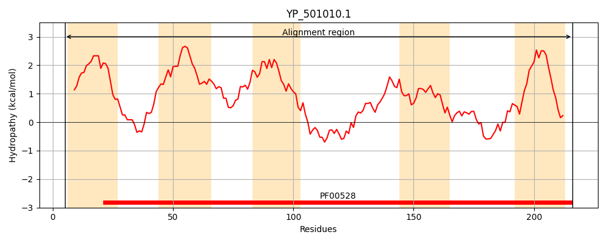
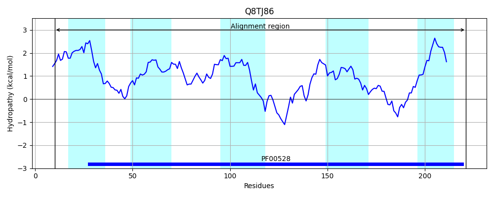
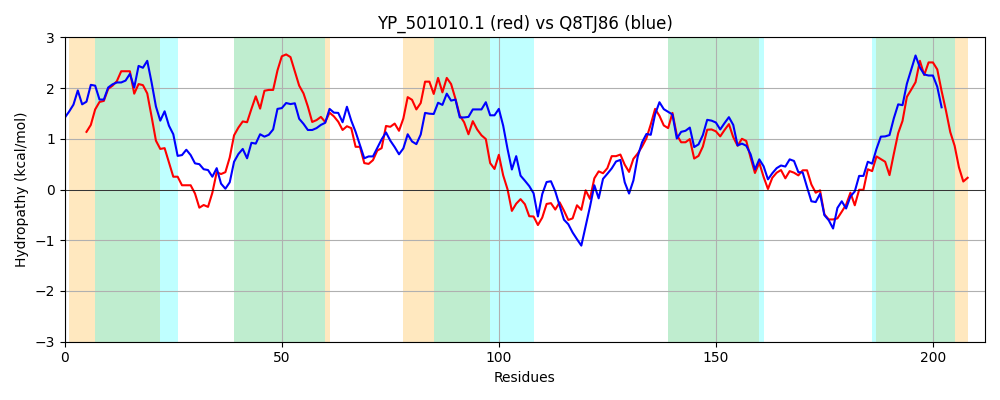

Hit Accession: Q8TJ86
Hit TCID: 3.A.1.8.2
Hit Description: gnl|BL_ORD_ID|16859 gnl|TC-DB|Q8TJ86|3.A.1.8.2 Molybdenum ABC transporter, permease protein OS=Methanosarcina acetivorans (strain ATCC 35395 / DSM 2834 / JCM 12185 / C2A) GN=modB PE=3 SV=1
Mach Len: 212
e:0.000000
Query TMS Count : 5
Hit TMS Count: 5
TMS-Overlap Score: 4.650000
Predicted Substrates:CHEBI:6967;molybdate
BLAST Alignment:
Score: 422 , Bit scores: 167 bits, E-value: 5.4e-52, Alignment length: 212, Percentage identity: 41
Query: 5 TPFWISIRVAVISTIIVTVLGIFISKWLYRRKGSWVKVLESLLILPIVLPPTVLGFILLIIFSPRGPIGQFFANVLHLPVVFTLTGAVIASVIVSFPLMYQHTVQGFRGIDTKMINTARTMGASETKIFLKLILPLAKRSILAGIMMSFARALGEFGATLMVAGYIPNKTNTLPLEIYFLVEQGRENEAWLWVLVLVAFSIVVISTINLLNK 216
TP ++++++VI+T+ VT LGI I+ L +R+ + + ++ +P+VLPPTV G+IL+I+ G IG F+ + ++FT A IA+ +VS PLM + T +D + +R +G +E + L + LPLAK+ I+AG ++SFARA+GEFGATLMVAG IP KT+T+PL IY + G A L VL+LV S + I+ + L +
Sbjct: 10 TPLLLTLKISVIATLFVTALGILIAYVLAKREFPGKGLADVMVTMPMVLPPTVTGYILVILLGKNGVIGSIFSKITGSGILFTWQAAAIAAFVVSLPLMVKTTTAAIGAVDRNVEEASRILGRNEFETALFITLPLAKKGIIAGCVLSFARAVGEFGATLMVAGNIPGKTSTMPLSIYGAYQTGNNELANLLVLILVVMSFITIAATSKLGE 221 | Protein Hydropathy Plots: |
|---|
|  |  |
Pairwise Alignment-Hydropathy Plot:
|
|---|
|  |